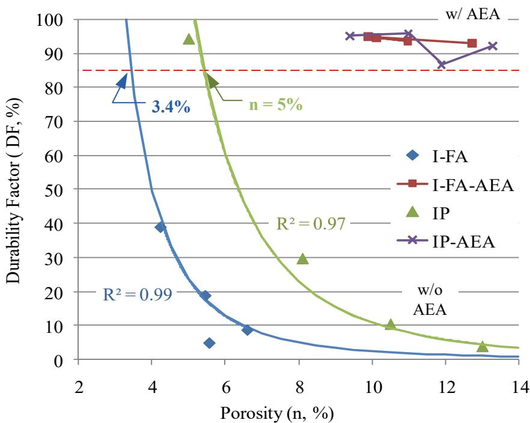
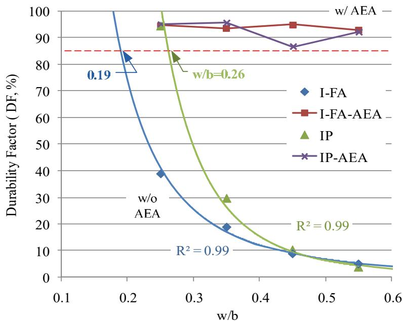
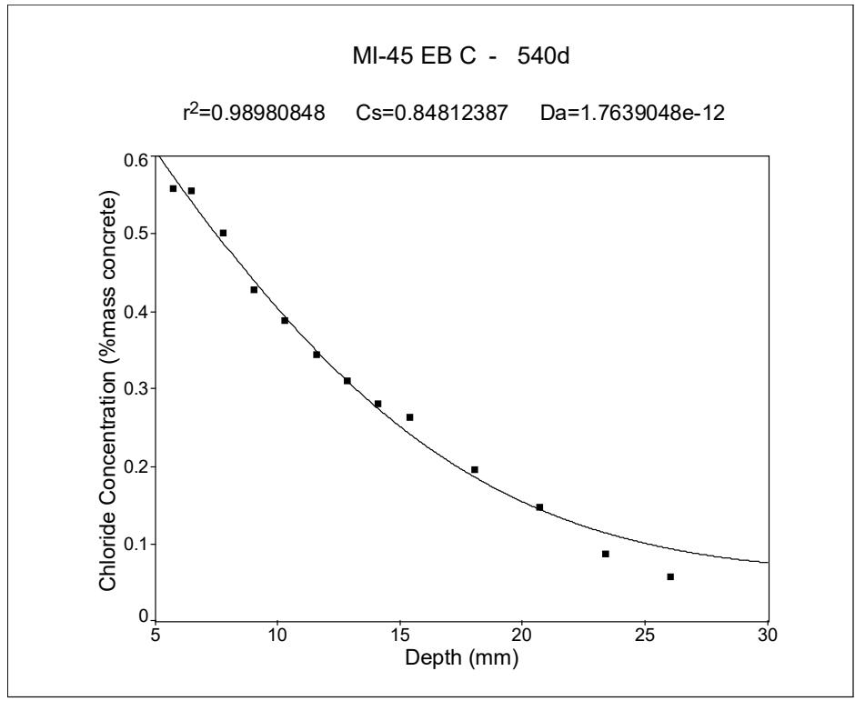
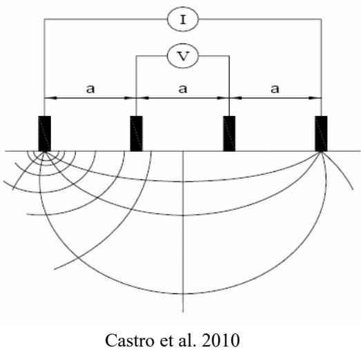
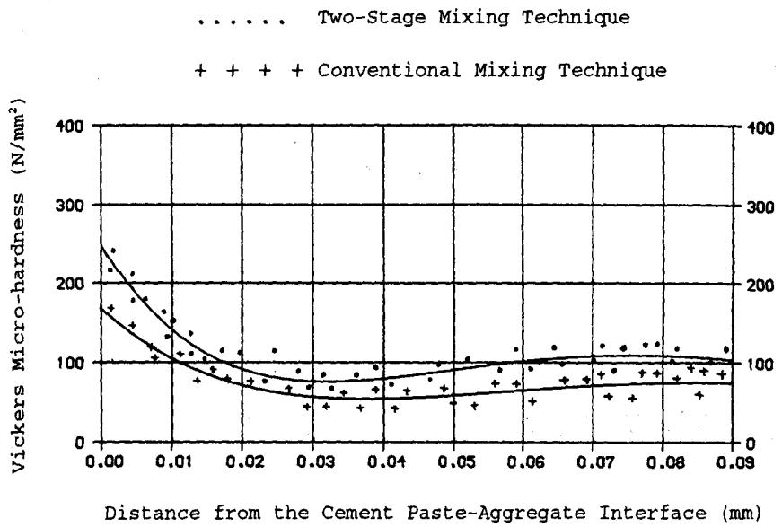
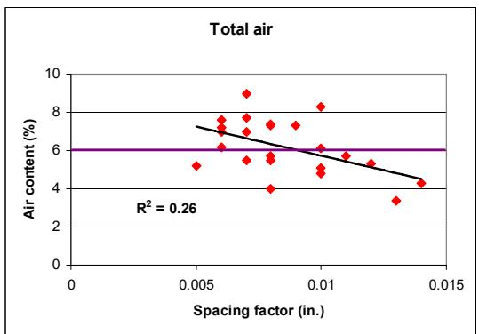

Low-Permeability Concrete
Concrete with reduced water-to-binder ratios (w/b) and/or supplementary cementitious materials (SCMs) that significantly limits the penetration of water, gas, and chemicals. Low-permeability concrete rarely reaches critical saturation under natural exposure conditions, and the water in its fine capillary voids is difficult to freeze. [1]
The children are Electrical Conductivity, Sorptivity, Surface Resistivity, and the Wenner Probe method. Electrical Conductivity measures ion mobility to infer moisture content during hydration, while Sorptivity quantifies capillary water absorption rates. [2] In contrast, both Surface Resistivity and the Wenner Probe utilize electrical resistance as a nondestructive proxy for chloride penetration resistance and transport properties [3].
Low-permeability concrete is a classification within transport properties and permeability that achieves reduced transport characteristics by minimizing capillary pore connectivity. This reduction is primarily attained through the use of a low water-to-cement ratio, typically below 0.45, which serves to lower permeability and hinder water saturation [1].
Sources (14)
Sub-concepts (4)
Freeze-Thaw Durability and Permeability Relationships
Wang et al. (2009) addressed the key question of whether low permeability alone can provide F-T durability without air entrainment, finding that low permeability alone does not guarantee F-T durability [1]. Instead, it is the combination of low permeability and very high strength that makes concrete F-T durable without AEA [1]. In high-strength concrete without air entrainment, durability increases with compressive strength because the internal stresses generated by freezing water must be lower than the concrete’s structural capacity [1]. This is influenced by the fact that water contained within very fine capillary pores requires significantly lower temperatures to freeze compared to water in larger capillary pores, which typically freeze near or slightly below 0°C [1].
For non-air-entrained concrete, the relationship between porosity and F-T durability is well-defined, whereas for air-entrained samples this correlation is less distinct due to the dominant role of the air void system in resisting freeze-thaw stresses [1]. Air entrained concrete may maintain high F-T durability despite having relatively high chloride ion permeability values because the air void system provides space for freezing water expansion [1]. Furthermore, while air entrainment increases concrete porosity, it does not necessarily result in significantly higher chloride ion permeability compared to non-air-entrained mixes of similar composition [1]. However, even if a high air content (e.g., 8.6 percent) may be present, the concrete can still exhibit poor freeze-thaw resistance if the specific surface and spacing factor do not meet recommended thresholds of ≥ 24 mm⁻¹ and ≤ 0.20 mm, respectively [4].

Durability factor as a function of porosity [1]Requirements for Non-Air-Entrained Concrete
For non-air-entrained concrete, achieving a durability factor (DF) ≥ 85% requires specific permeability thresholds that vary by cement type: ≤ 608 coulombs for IP cement and ≤ 185 coulombs for I-FA [1]. These values are derived from model equations correlating rapid chloride ion permeability with F-T durability [1]. Additionally, the limiting water-to-binder ratio for non-air-entrained concrete is 0.26 for Type IP cement and 0.19 for Type I-FA; however, a w/b of 0.19 is interpolated from laboratory data and is not attainable in field construction, while 0.26 is considered impractical for slip-form paving [1].

Durability factor as a function of w/b [1]Regarding compressive strength requirements, concrete made with Type I cement and Class C fly ash requires a minimum 28-day compressive strength of 70.7 MPa (10,246 psi) to be F-T durable without air entrainment, while IP cement concrete requires 82 MPa (11,880 psi) [1]. In the study, the only F-T durable non-AEA mix was IP25 (Type IP, w/b=0.25, 12,760 psi, 520 coulombs) [1].
 Durability factor as a function of spacing factor, measured using the RapidAir [1]
Durability factor as a function of spacing factor, measured using the RapidAir [1]
Methods to Achieve Low Permeability
- Using SCMs (fly ash, slag, metakaolin, silica fume)
- Increasing degree of hydration through longer moist curing
- Using lower water-to-cement ratio
In field evaluations of concrete pavements and bridge decks containing slag cement, rapid chloride permeability tests (ASTM C 1202) yielded charge passed values ranging from 590 to 1,580 coulombs, with estimated surface chloride diffusion coefficients varying between 1.4E-13 m²/s and 5.6E-12 m²/s. [5]

Example of chloride profile test results (before and after scaling tests) [5]Self-consolidating flowable concrete (SFSCC) exhibits noticeably higher porosity and rapid chloride ion permeability at 28 days compared to conventional pavement concrete, though these properties become comparable at later ages due to the extensive use of supplementary materials. [6]
Increasing cement content beyond the minimum required for strength can paradoxically increase chloride penetration and air permeability due to higher shrinkage risks and increased paste volume. [7]
Concrete with a water-to-cement ratio greater than 0.42 exhibits significantly higher permeability due to an increase in capillary volume. [7]
 Composition of sealed and fully hydrated portland cement paste [7]
Composition of sealed and fully hydrated portland cement paste [7]
Low-permeability concrete is characterized by a refined pore structure that significantly reduces its sorptivity, thereby limiting the rate at which water is drawn into the matrix via capillary action. Sorptivity serves as a measure of this capillary absorption rate and is closely related to the concrete’s pore structure characteristics [2]. A better-developed microstructure, often resulting from adequate internal moisture retention that facilitates cement hydration, leads to lower sorptivity values compared to regions with poorer curing conditions [2].
For a given water-to-cementitious materials ratio, increasing the paste content directly increases chloride penetrability. [7]
AASHTO T 358 evaluates the electrical resistivity of water-saturated concrete to assess moisture penetration resistance, offering a rapid, non-destructive alternative that avoids chemicals and allows specimens to be reused for subsequent testing [8].

Schematic of the four-point Wenner array probe setup [8]Low-permeability concrete utilizes electrical conductivity measurements to nondestructively assess the uniformity of moisture distribution within the cured pavement matrix [2]. This method is effective because the electrical conductivity of concrete depends primarily on the cement hydration process and the moisture content present in the material [2]. Consequently, variations in conductivity values can indicate differences in curing effectiveness and the uniformity of compound application across different locations [2].
Role of Supplementary Cementitious Materials (SCMs)
The use of high contents of slag and fly ash allows for longer flow distances and extended retention in flowability, which is particularly beneficial for placing concrete in underwater bridge footings [9]. Furthermore, a 25% replacement rate with fly ash significantly lowers the heat of hydration, helping to reduce thermal cracking risks in large concrete mass structures [9]. In aggressive chloride environments, an optimum fly ash content for durability is approximately 40% replacement, whereas this drops to 30% in milder conditions [9]; additionally, silica fume mixtures outperform other SCM types in chloride permeability resistance, even when subjected to limited curing periods [9]. To achieve GGBFS concrete resistant to harsh chloride environments, a 50% replacement rate is required [9], though concrete containing Type I-FA cement exhibits a more rapid increase in chloride permeability when the water-to-binder ratio exceeds 0.35 [1].
The formation of expansive calcium oxychloride phases can be significantly mitigated in concrete mixtures containing sufficient fly ash (approximately 30 to 35 percent replacement), which reduces the mass ratio of calcium oxychloride per gram of cementitious material from 30.5 percent in conventional mixes to 8.4 percent [4]. Finally, the use of ternary blends containing Class F fly ash, GGBFS, and silica fume can mitigate alkali-silica reactivity while simultaneously reducing permeability through the consumption of calcium hydroxide and refinement of the pore structure [10].
 Relationship between fly ash replacement dosage and oxychloride amount [4]
Relationship between fly ash replacement dosage and oxychloride amount [4]
Two-Stage Mixing and Additive Technologies
The two-stage concrete mixing process significantly reduces permeability compared to conventional methods by creating a more intimate bond and lower porosity in the interfacial transition zone (ITZ) [11]. This method involves initially mixing aggregate with a portion of water and cement to form a thick slurry, which coats the particles before the remaining water is added [11]; consequently, the process can increase compressive strength by 5 to 10 percent while significantly improving concrete uniformity [11]. Additionally, incorporating nano-clay additives such as Actigel increases yield stress and thixotropy in cement-based materials, which controls timely shape-holding ability and generally provides better scaling resistance to deicing chemicals [6].

Micro-hardness of ITZ after curing 28 days [11]Internal Curing Mechanisms and Absorptive Aggregates
Internal curing promotes more efficient hydration of supplementary cementitious materials like fly ash and slag, which further refines pore structure and lowers permeability over time [12]. Absorptive aggregates, such as slag or porous limestone, can enhance long-term hydration and reduce permeability if their pores are fully saturated prior to batching, allowing them to act as internal curing reservoirs that promote continued cement hydration beyond standard curing periods [10]. Specifically, the use of saturated lightweight fine aggregate as an internal curing agent reduces autogenous shrinkage and stiffness while increasing strength and lowering permeability in low water-to-cement ratio concrete [12].
Furthermore, internal curing using saturated lightweight fine aggregate (LWFA) extends the hydration period for approximately one month after placement, which further refines the pore structure and reduces permeability beyond what is achieved by standard external curing methods [13]. As an alternative, the use of superabsorbent polymers (SAPs) is being investigated as an internal curing agent that can provide similar permeability-reducing benefits without the logistical challenges associated with preconditioning lightweight aggregates [13].
Air Content Thresholds and Void Spacing
Petrographic examinations using scanning electron microscopy (SEM) and image analysis allow for the precise measurement of air-void parameters, including apparent specific surface and spacing factor, which are critical indicators of concrete durability [5]. Maintaining total air content above six percent ensures an acceptable bubble spacing factor, which is critical for durability even though it results in a minor reduction in compressive strength [10]. To provide a quantitative indicator of adequate freeze-thaw resistance in fresh concrete, a Super Air Meter (SAM) value below 0.2 is recommended to ensure an air void spacing factor below 0.008 inches [4].

Total air in the concrete vs. spacing factor [10]Transport Property Standards
Acceptance criteria for transport properties may specify a minimum saturated formation factor greater than 1,500 at an equivalent age of 91 days [14].
Low-permeability concrete is evaluated using surface resistivity testing to quantify the material’s ability to impede chloride ion ingress through its pore structure. This method serves as an effective and simpler alternative to traditional tests like AASHTO T277 for assessing chloride penetration resistance [3]. Research indicates a correlation between results from Wenner four-probe devices and standard conductivity measurements, allowing them to be related through Ohm’s law for various cement mixtures [3]. Consequently, agencies such as the Iowa DOT are considering incorporating resistivity testing into their quality control specifications for concrete pavements [8].
Low-permeability concrete performance is quantified by measuring surface electrical resistivity using a four-pin Wenner probe array to estimate chloride ion penetration resistance [8]. This method provides an effective and simpler means of testing compared to full-depth specimen tests, as there is a established correlation between the two approaches for both blended and unblended cement mixtures [3]. While surface resistivity measures conductivity only at a shallow depth determined by the probe spacing, it remains closely related to overall concrete resistivity through Ohm’s law relationships [3].
Related Concepts
- Freeze-Thaw Durability
- Air Entraining Agent
- Supplementary Cementitious Materials
- Fly Ash
- Transport Properties & Permeability
- Electrical Conductivity of Concrete
- Sorptivity
- Surface Resistivity
- Wenner Probe / Surface Resistivity
References
- K. Wang, G. Lomboy, and R. Steffes, "Investigation into Freezing-Thawing Durability of Low-Permeability Concrete with and without Air Entraining Agent," National Concrete Pavement Technology Center, Ames, IA, 2009. [Online]. Available: https://www.intrans.iastate.edu/wp-content/uploads/2018/03/low-permeability-concrete.pdf
- K. Wang, J. K. Cable, and G. Zhi, "Improved Pavement Curing Materials and Techniques: Part 1 (Phases I and II)," Center for Transportation Research and Education (CTRE), Iowa State University, Ames, IA, Rep. TR-451, 2002. [Online]. Available: https://www.cptechcenter.org/wp-content/uploads/2018/03/curing.pdf
- P. Tikalsky, P. Taylor, S. Hanson, and P. Ghosh, "Development of Performance Properties of Ternary Mixtures: Laboratory Study on Concrete," National Concrete Pavement Technology Center, Ames, IA, Rep. TPF-5(117), 2011. [Online]. Available: https://www.intrans.iastate.edu/research/completed/development-of-performance-properties-of-ternary-mixtures-laboratory-study-on-concrete/
- X. Wang, P. Taylor, and D. King, "Evaluation of Modified Concrete Mixture Proportions for the City of West Des Moines," National Concrete Pavement Technology Center, Ames, IA, 2016. [Online]. Available: https://www.intrans.iastate.edu/wp-content/uploads/2018/03/WDM_modified_concrete_mixture_proportions_w_cvr.pdf
- S. Schlorholtz and R. D. Hooton, "Deicer Scaling Resistance ... Containing Slag Cement, Phase 1: Site Selection and Analysis of Field Cores," National Concrete Pavement Technology Center, Ames, IA, Rep. TPF-5(100), 2008. [Online]. Available: https://www.cptechcenter.org/wp-content/uploads/2018/03/schlorholtz_deicing_phase1.pdf
- K. Wang, S. P. Shah, J. Grove, P. Taylor, P. Wiegand, B. Steffes, G. Lomboy, Z. Quanji, L. Gang, and N. Tregger, "Self-Consolidating Concrete—Applications for Slip-Form Paving: Phase II," National Concrete Pavement Technology Center, Ames, IA, Rep. TPF-5(098), 2011. [Online]. Available: https://www.intrans.iastate.edu/wp-content/uploads/2018/03/SCC_Phase_2_final_report-edited_wcover.pdf
- P. Taylor, F. Bektas, E. Yurdakul, and H. Ceylan, "Optimizing Cementitious Content in Concrete Mixtures for Required Performance," National Concrete Pavement Technology Center, Ames, IA, 2012. [Online]. Available: https://www.intrans.iastate.edu/wp-content/uploads/2018/03/taylor_ocm_w_cvr2.pdf
- J. Gross, J. Weiss, T. Ley, P. Taylor, N. Weitzel, T. Van Dam, G. Smith, and C. Jones, "Performance-Engineered Concrete Paving Mixtures," National Concrete Pavement Technology Center, Iowa State University, Ames, IA, Rep. TPF-5(368), 2022. [Online]. Available: https://www.intrans.iastate.edu/wp-content/uploads/2023/04/performance-engineered_concrete_paving_mixtures_w_cvr.pdf
- P. Tikalsky, V. Schaefer, K. Wang, B. Scheetz, T. Rupnow, A. St. Clair, M. Siddiqi, and S. Marquez, "Development of Performance Properties of Ternary Mixes, Phase 1," Center for Transportation Research and Education, Ames, IA, Rep. TPF-5(117), 2007. [Online]. Available: https://www.intrans.iastate.edu/research/completed/development-of-performance-properties-of-ternary-mixes-phase-1/
- J. Grove, F. Bektas, and H. Gieselman, "Southeast Michigan Local Road Concrete Pavement Durability Study," National Concrete Pavement Technology Center, Ames, IA, 2006. [Online]. Available: https://www.cptechcenter.org/wp-content/uploads/2018/03/mi_pavement_durability.pdf
- T. D. Rupnow, V. R. Schaefer, K. Wang, and B. L. Hermanson, "Improving PCC Mix Consistency and Production Rate through Two-Stage Mixing," Center for Transportation Research and Education, Ames, IA, Rep. TR-505, 2007. [Online]. Available: https://www.intrans.iastate.edu/wp-content/uploads/2018/03/two-stage-mix-1.pdf
- P. Taylor, T. Hosteng, X. Wang, and B. Phares, "Evaluation and Testing of a Lightweight Fine Aggregate Concrete Bridge Deck in Buchanan County, Iowa," National Concrete Pavement Technology Center and Bridge Engineering Center, Ames, IA, Rep. TR-648, 2016. [Online]. Available: https://www.intrans.iastate.edu/wp-content/uploads/2018/03/Buchanan_LWFA_bridge_deck_w_cvr.pdf
- A. Daghighi, P. Taylor, H. Ceylan, and Y. Zhang, "Impacts of Internally Cured Concrete Paving on Contraction Joint Spacing Phase II," National Concrete Pavement Technology Center, Iowa State University, Ames, IA, Rep. TR-746, 2021. [Online]. Available: https://www.cptechcenter.org/wp-content/uploads/2021/05/IC_concrete_paving_impacts_phase_II_field_impl_w_cvr.pdf
- W. J. Weiss and L. Montanari, "Guide Specification for Internally Curing Concrete," National Concrete Pavement Technology Center, Ames, IA, Rep. TPF-5(286), 2017. [Online]. Available: https://www.intrans.iastate.edu/wp-content/uploads/2018/09/IC_guide_spec_w_cvr.pdf
Feedback on this page